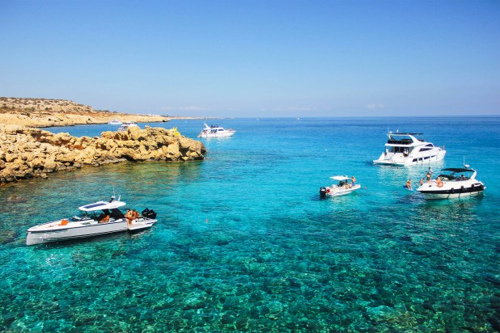
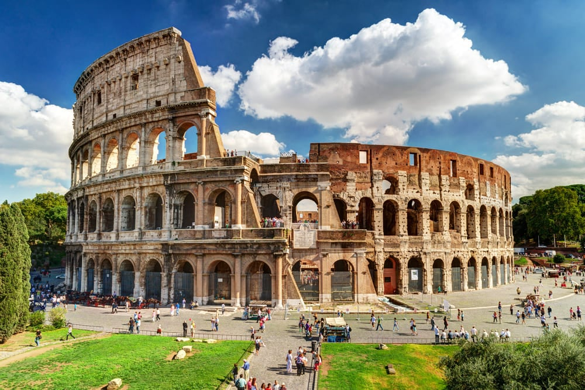

Welcome to Davit's Touristal Agency
This is website about world wide travelling touristal company

What does our company offer?
Our agency's goals are multifaceted. We offer safe transportation to
your chosen country and city, as well as hotel reservations. Our agency
serves the well-being of the consumer and we care about comfort, quality
and values, We carry quality and customers rights.
Cyprus

Cyprus, officially the Republic of Cyprus, is an island country in the
eastern Mediterranean Sea. Situated in West Asia, its cultural identity
and geopolitical orientation are overwhelmingly Southeast European.
Cyprus is the third largest and third most populous island in the
Mediterranean, after Sicily and Sardinia. It is located southeast of
Greece, south of Turkey, west of Syria and Lebanon, northwest of Israel
and Palestine, and north of Egypt. Its capital and largest city is
Nicosia. Cyprus hosts the British military bases Akrotiri and Dhekelia,
whilst the northeast portion of the island is de facto governed by the
self-declared Turkish Republic of Northern Cyprus, which is separated
from the Republic of Cyprus by the United Nations Buffer Zone.
Italy

Italy officially the Italian Republic Italian: is a country in Southern
Europe , in the center of the Mediterranean. It has been a member of the
European Union and NATO since their creation and is the third-largest
economy in the eurozone. Area: 302,070 km 2 . Population: 59,283,968
people (2024). It borders France in the northwest (border length is 488
km), Switzerland (740 km) and Austria (430 km) in the north, and
Slovenia in the northeast (232 km). It occupies the Apennine Peninsula ,
the Padan Plain , the southern slopes of the Alps , the islands of
Sicily , Sardinia , and a number of small islands. Within the territory
of Italy there are two enclave states : the state of San Marino and the
state of Vatican City , located within the territory of Rome and
associated with Italy , with each of which Italy has an internal border
of 39 km and 3.2 km, respectively. The capital is Rome. The official
language is Italian , which is divided into many dialects.
France
France officially the French Republic, is a country primarily located in
Western Europe. Its overseas regions and territories include French
Guiana in South America, Saint Pierre and Miquelon in the North
Atlantic, the French West Indies, and many islands in Oceania and the
Indian Ocean, giving it one of the largest discontiguous exclusive
economic zones in the world. Metropolitan France shares borders with
Belgium and Luxembourg to the north; Germany to the northeast;
Switzerland to the east; Italy and Monaco to the southeast; Andorra and
Spain to the south; and a maritime border with the United Kingdom to the
northwest. Its metropolitan area extends from the Rhine to the Atlantic
Ocean and from the Mediterranean Sea to the English Channel and the
North Sea. Its eighteen integral regions—five of which are overseas—span
a combined area of 632,702 km2 (244,288 sq mi) and have an estimated
total population of over 68.6 million as of January 2025. France is a
semi-presidential republic. Its capital, largest city and main cultural
and economic centre is Paris.